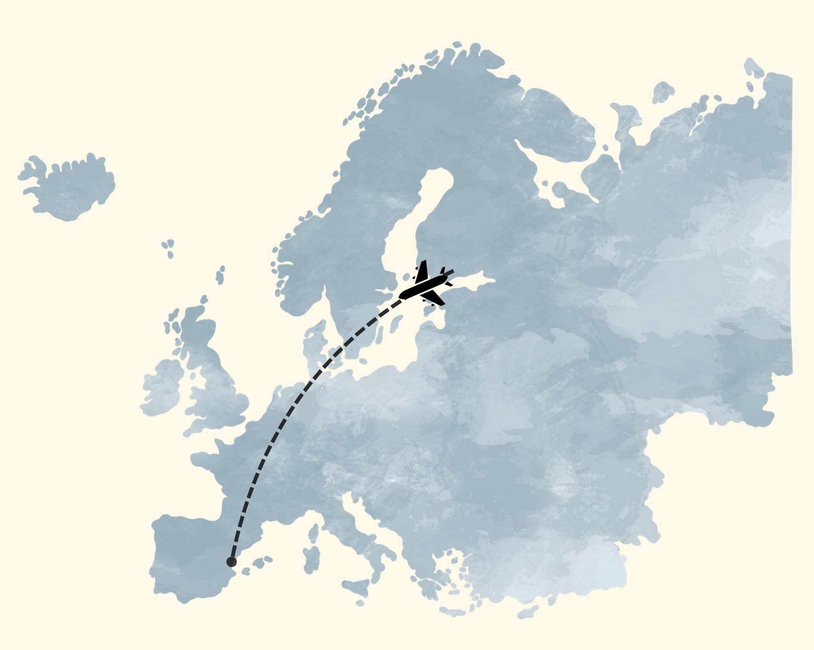

Bienvenido a la página web de la edición especial de nuestra revista del 27 de abril.
"Eres la forma más bonita
que ha tenido la vida de enseñarme
que vale la pena arriesgarse a amar"
En la última página de la revista hay una lista de planes por hacer juntos, pero... ¿cuándo podremos empezar a hacerlos?
